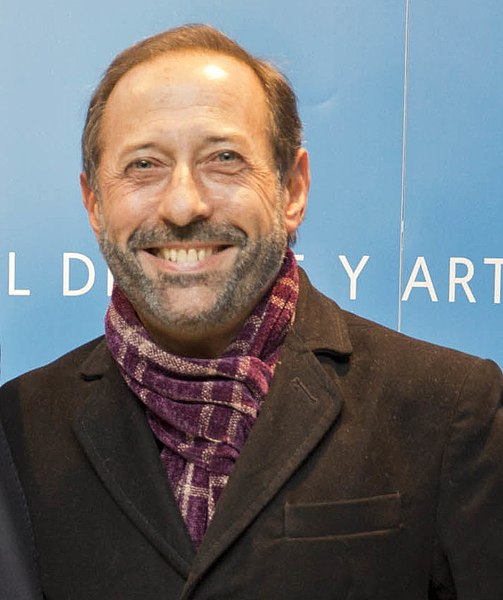

Actor
Guillermo Francella
Biografia
Guillermo Héctor Francella (Buenos Aires; 14 de febrero de 1955) es un actor, comediante, humorista y director argentino de teatro, cine y televisión. Algunas de sus películas fueron Rudo y Cursi, El secreto de sus ojos (ganadora del premio Óscar a la Mejor película de habla no ingles, Corazón de León, El robo del siglo y El Clan. Es considerado uno de los actores más influyentes en su país.Ha trabajado en series y programas de televisión como La familia Benvenuto, Poné a Francella y Casados con hijos.
Francella es el segundo de dos hermanos hijos de Adelina Redondo y Ricardo Héctor Francella, un empleado bancario, profesor de gimnasia y entrenador de levantamiento de pesas en Racing Club. Pasó sus primeros dos años de vida en Villa del Parque y más tarde la familia se mudó a Beccar, barrio de norte del Gran Buenos Aires donde Francella vivió el resto de su infancia.La casa estaba ubicada al lado de la de sus abuelos paternos, Domenico y Zaída; su abuelo era un inmigrante italiano que había llegado a Argentina proveniente de Falconara Albanese (Calabria) y cuyo apellido original era Frangella.Durante su juventud se vio influenciado por el cine italiano y la literatura
Filmografia
- 1987 - Los bañeros más locos del mundo
- 1989 - Bañeros II, la playa loca
- 1990 - Los extermineitors - 1990
- 2009 - El secreto de sus ojos
- 2020 - El robo del siglo
- 2022 - Granizo
Premios y Nominaciones
- 2016 - Premio Platino a la mejor interpretación masculina - El Clan
- 2016 - Mejor actor - El Clan
- 2014 - Mejor actor - Corazón de león
- 2010 - Mejor actor de reparto - El secreto de sus ojos
Familia
- Cónyuge: María Inés Breña
- Hijos: Johanna Francella y Nicolás Francella